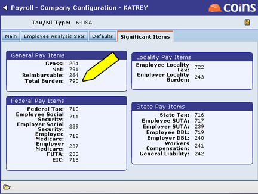
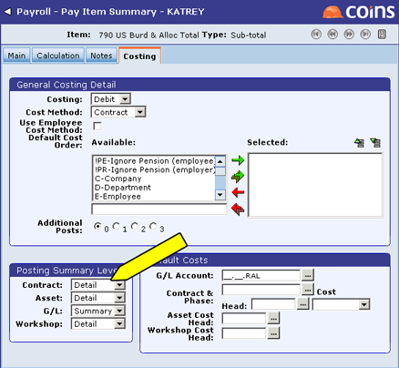
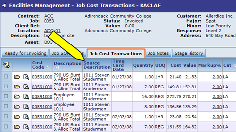
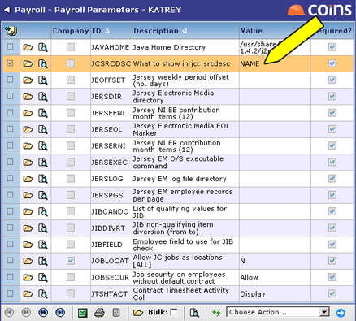

To Set Up US PR to Use With FM:
Each topic below represents a specific task that should be performed to allow the Payroll module to be used with . Click on a topic to learn how to perform each task.
Set the Pay Items Posting Level to Detail
As shown in the screenshot below, Total Burden is represented as Pay Item 790 in Payroll Configuration. By setting the total burden pay item's Contract Posting Level to Detail, up to three cost transaction records will be created for each timecard. These cost transaction records will contain information that lets you return to the Payroll timecard record for additional information when needed (for example, you may want the Time Card Date to print on the invoice).

To set up the pay item, do the following:
- Go to Payroll Pay Items.
- Open Total Burden pay item number 790.
- Go to the Costing tab.
- Set the Contract Posting Level to Detail, as shown in the screenshot below.

Set the PR Global Parameter JCSRCDSC to Name
Since Employee data has historically not been passed into the Cost Transaction description, the only way for the Employee Number to appear in the Description field was to post in Partial form. However, this rolled up the values into summary cost transaction records and resulted in the inability to return such information to a timecard. By using PR parameter JCSRCDSC, this sensitive data can be provided. The result is a read-only field in the Cost Transactions screen (Source Description) that displays the employee name when the PR parameter JCSRCDSC = Name, as shown in the screenshot below. Without this column, you would not be able to identify the employee.

To set up the PR Global Parameter for this purpose, do the following:
- Go to Parameters.
- Go to PR parameter JCSRCDSC.
- Open the parameter.
- Select NAME in the Value field.
- Save your changes.
- You should see NAME in the Value column, as shown in the screenshot below.
